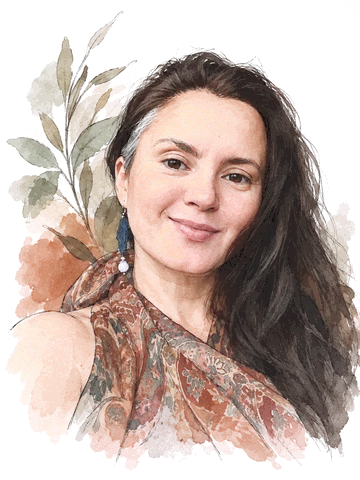

Ксения Телегина
Проводник расслабления · йога-нидра, медитация
Преподаю йога-нидру и веду вечернюю медитативную йогу: мягкие комплексы, много дыхания и медитация.
Моя часть – три вещи. Вечерняя расслабляющая йога – спокойные комплексы, чтобы отпустить день. Йога-нидра – практика, где лежишь, следуешь за голосом и глубоко перезагружаешь нервную систему, а намерение, сформулированное в состоянии между сном и явью, потом прорастает в жизни. Будут короткие записи и одна-две длинные тематические нидры онлайн за программу. И медитация – для тех, кто хочет начать, бросает или хочет разобраться глубже: типы, ключи, с чего проще стартовать.
Ещё за мной круги поддержки – два за программу, где мы делимся опытом и слышим друг друга.